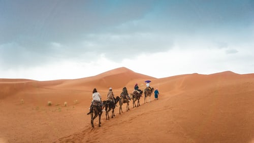

Algeria is a country in the Maghreb region of North Africa.
The capital and most populous city is Algiers, located in the far north of the country on the Mediterranean coast.
With an area of 2,381,741 square kilometres (919,595 sq mi), Algeria is the tenth-largest country in the world, and the largest in the African Union and Arab World.[12] With an estimated population of over 42 million, it is among the ten most populous states in Africa.
Algeria is bordered to the northeast by Tunisia, to the east by Libya, to the west by Morocco, to the southwest by the Western Saharan territory, Mauritania, and Mali, to the southeast by Niger, and to the north by the Mediterranean Sea.
It is a semi-presidential republic consisting of 48 provinces and 1,541 communes (counties).

Pre-1962 Algeria has known many empires and dynasties, including ancient Numidians, Phoenicians, Carthaginians, Romans, Vandals, Byzantines, Umayyads, Abbasids, Idrisid, Aghlabid, Rustamid, Fatimids, Zirid, Hammadids, Almoravids, Almohads, Zayyanids, Spaniards, Ottomans and, finally, the French colonial empire.